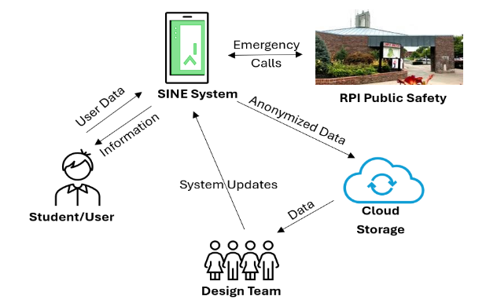

The SINE System takes the Blue Light poles already on campus and gives them a second job. Instead of just an emergency button most students never touch, each pole becomes a kiosk with real, useful information.
Just a button. Most students don't know who it calls or what happens when they press it.
Same pole, same location. Touchscreen with live campus info, and a button that finally makes sense to use.
Most open campuses have Blue Light poles. The problem is that students mostly walk right past them. They don't know who picks up, whether they can cancel, or if their situation even qualifies. So they just don't use them.
SINE doesn't tear anything out. It builds on top of what's already there. The idea is that if students are stopping at these poles every day to check shuttle times or find a professor's office, they'll feel a lot more comfortable using that emergency button when it actually matters.
Five features. One familiar pole.
Shows next arrivals for both RPI shuttle loops along with which direction they're actually heading. CDTA Routes 87 and 286 are included too, with the stops people care about.
Search by name or department and find where someone's office is. From there you can pull up the map and get walking directions, accessible routes included.
Campus warnings, weather updates, and closures pulled from RPI operations. The more urgent something is, the more visible it is on screen.
The button is still there, it's just physical rather than buried in a menu. Right next to it is a short description that answers what people actually want to know: who picks up, can you hang up, is it recorded. That context alone makes it easier to use.
A real map of campus with every building marked. Tap any building and you get walking directions from wherever the kiosk is. Accessible routes are flagged by default, which is especially useful for people who are new to campus or just visiting.
"The system made a decent first impression on both participants. Nobody needed it explained to them, which is probably the most important thing for a kiosk."Usability Test Participant, RPI Campus, March 2026
Everything comes from actual campus systems, not a third-party app someone forgot to update.
Students who use the kiosk every day for normal stuff are going to be a lot more comfortable with it when something actually goes wrong.
Accessible routes show up in the map by default. Students with mobility needs don't have to figure that out on their own.
We ran usability tests with RPI students and staff in Troy. The features here are based on what they actually said they wanted.
Most students have. They're meant to help, but the design makes them hard to trust. Nobody knows what happens when you press the button, so nobody does. That's what we're trying to fix with SINE.
Try the prototypeSINE collects anonymous usage data to get better over time. Things like what gets searched most, which features people use first, and how traffic at each kiosk changes throughout the day.
None of it is tied to you personally. No names, no student IDs stored by us, nothing beyond the kiosk you happen to be standing at. The data goes back to the design team so we can figure out what to improve, what to cut, and where a new kiosk would actually get used.

Tap the screen to start it up. This is the actual interface we built, not a mockup.
Just the legal stuff. Worth reading if you're considering this for your campus.
The user agrees to use the product as intended; improper use voids the manufacturing warranty. Any injury caused by improper use is not the responsibility of the designer or manufacturer.
Improper installation of the SINE System resulting in damages, injury, or system malfunctions is not the responsibility of the designer or manufacturer.
The SINE System does not infringe on any existing patent. What makes it distinct includes a dual screen for two users to access different information at the same time, a physical emergency button that contacts public safety, warning lights that activate when the button is pressed, and customizable information tiles per institution.
SINE System manuals are provided digitally upon purchase. Physical copies are available at a reasonable fee. Mechanical parts and hardware are standardized for easy buyer repair, and replacement parts are available from the manufacturer.
Any modification of hardware or software voids the manufacturer warranty.
SINE does not collect private or personal information. Some features require verifying that you're an RPI student or faculty member, but your identity is never stored by the SINE system itself.